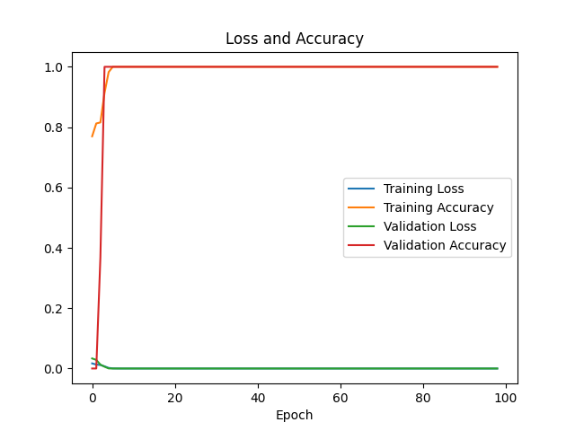

Ryan Lo
Architect, ESP32 Programming and UI design
Columbia University
EECS E4764 Fall'25
Artificial Intelligence of Things
Team 15 Project Report
Adaptive User Room Assistant
AURA is an adaptive user room assistant that senses the environment and adjust lighting in real time. AURA uses environmental data to determine whether the user is being in one of four modes: STUDY, RELAX, SLEEP, or AWAY.
We intend to create a device that will make our room more personalized by learning from our behavior patterns. The device should allow us to focus on the task that we are doing and reduce distractions. This is done by automatically predicting our current behavior mode, and assisting us by adjusting the environment to make us work or relax more comfortably.
The system consists of two major part: the device and the server. The device collects the environmental data including brightness, sound and presence of motion, and send the data to the server. A machine learning model is trained based on the data collected. Whenever the device wants to predict the user's current behavior, it sends a request that contains the sensor data in a 10-second interval to the server, which uses the ML model to classify the user's activity and sends it back to the device. The device then make adjustments such as increasing lighting when the user is in STUDY mode or turning off the light when the user is in SLEEP mode.
We use 4 IMMP441 omnidirectional microphone for detecting sound, 2 BH1750 light intensity illumination modules for detecting the brightness, and three SR501 PIR motion sensors to detect the presence of motion. The data is collected each second, and we combine the data in a 10-second interval to form one sample. The machine learning model consists of a Transformer encoder and three linear layers and is trained on approximately 300 samples in each mode. It is trained for 100 epochs and reaches 100% accuracy on the validation dataset.

We use cross entropy loss to compute the loss of the model output. After training for 100 epochs, we have a validation accuracy of exactly \( 100\% \) and a validation loss of \( 9.06 \times 10^{-8} \).
Paszke, A., Gross, S., Massa, F., Lerer, A., Bradbury, J., Chanan, G., ... & Chintala, S. (2019). Pytorch: An imperative style, high-performance deep learning library. Advances in neural information processing systems, 32.
Vaswani, A., Shazeer, N., Parmar, N., Uszkoreit, J., Jones, L., Gomez, A. N., ... & Polosukhin, I. (2017). Attention is all you need. Advances in neural information processing systems, 30.
Jiang, X. & Fan, Y. (2025). FA25 Lab5 Voice Assistant with LLM. Online available at https://courseworks2.columbia.edu/courses/225157/files/folder/labs/lab5.
Ryan Lo: ry5972@columbia.edu
Weilong Guan: wg2459@columbia.edu
David Reyes: dr3382@columbia.edu
Kevin Sun: ys3978@columbia.edu